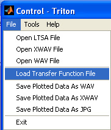
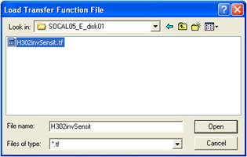
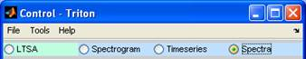
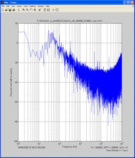
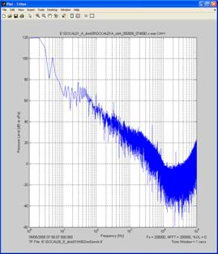

To make physical measurements, data logging systems can be used with sensors. In the case of a HARP system, pressure (µPa) is measured using a hydrophone sensor and the data are stored on hard disk drives. Two main conversions occur within this system. The first is at the hydrophone where time-varying pressure is converted to time varying voltage, amplified and filtered providing a frequency dependent response to pressure. The second conversion is in the data logger where the analog voltage signal is digitized and stored. The details of these conversions are often described in a Transfer Function and must be applied in reverse to correct the recorded data back into meaningful physical units.
Since XWAV data files units are in A/D [counts] and the physical units of pressure are in [µPa], the transfer function is described as 1/sensitivity [dB re uPa(rms)^2/counts^2] and is frequency dependent. Currently in Triton, the transfer function is only applied to spectra plots, not LTSA, spectrogram nor time series plots. The transfer function is applied to spectra plots via an user generated transfer function (TF) file consisting of columns of Frequency [Hz] and 1/sensitivity [dB re uPa(rms)^2/counts^2] in an ascii text format with extension *.tf.
The 1/sensitivity for a TF file is calculated via the negative of the sum of the following four transfer function components:
1) Sensor (Ceramic/PZT/hydrophone)
[dB re Vrms^2/ uPa(rms)^2] Open Circuit Received Response
2) Preamp + Filter Board Gain (usually frequency dependent i.e., freq column in TF file)
[dB]
3) Analog to Digital Converter (A/D)
[dB re counts^2/Vp-p ^2]
4) Vp-p / Vrms (This is needed because the TF file 1/sensitivity values are applied to the output of the power spectrum. This would not be added if the TF was applied to the time series, directly):
9.0 [dB re Vp-p^2/Vrms^2] = 10*1og10((1.414 * 2)^2)
or
Sensitivity = [dB re counts^2 /uPa(rms)^2]
+ [dB re Vrms^2/uPa^2] Sensor
+ [dB] Preamp+Filter Gain
+ [dB re counts^2/Vp-p ^2] A/D converter
+ 9.0 [dB re Vp-p^2/Vrms^2] Vp-p/Vrms
Example Transfer Function calculation:
AQ-1 & 1042: ~ -200 dB re Vrms/uPa(rms)
400 series board: +40+15 dB low / +80 dB high
A/D: +82 dB re counts^2/Vp-p^2
p-p2rms: +9 dB re Vp-p^2/Vrms^2
= -(-200 +55/+80 +82 +9) = +54/+29 dB re uPa(rms)/counts^2
Important: Don't forget it's the negative of the sum of the sensitivity to get the units correct for 1/sensitivity.
For more detailed description of TF calculations see Triton subroutine loadTF.m.

The transfer function is now loaded, but not applied



